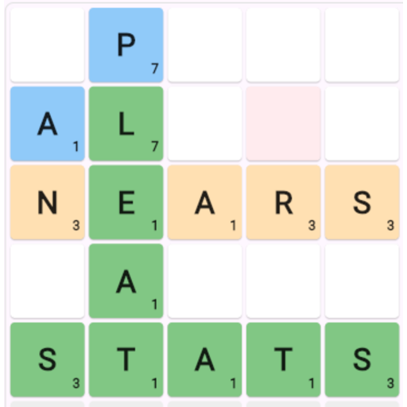
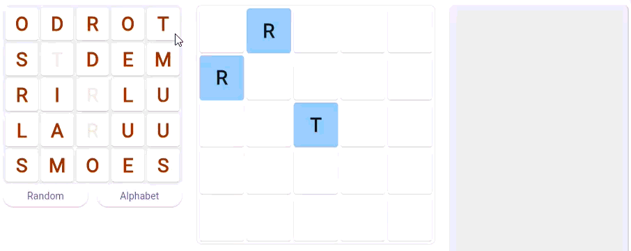
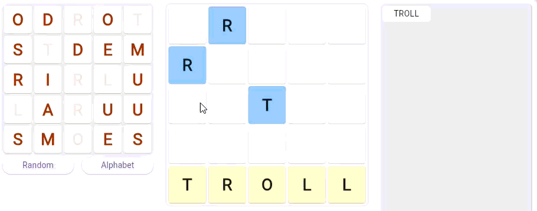

Play Scribo free online

Scribo lives here ...
Scribo is a free to play word game that challenges your vocabulary and spelling skills. ' 'Click the link above to play Scribo online
Simply move (drag or click) the tiles in the picker (on the left) to the board in the middle. When you make a word it is indicated on the board, and added to the pile of words you have discovered so far.

You have three clue letters already on the board, these are the blue tiles.
When you form a word which is correct, but in the wrong place the word is shown in ORANGE.
When you form a word which is correct, and in the correct place, the word is shown in GREEN. Gratz, you have solved a word.

When all the tiles are green (except the clue letter tiles) Super gratz, you have successfully completed the board.
Your score is shown as the number of words you discovered before completing the board. Try to finish the board while uncovering the least amount of words.
Scribo may contribute to your mental welbeing, exersize your brain mind, improve your cognitive skills and your vocabulary.